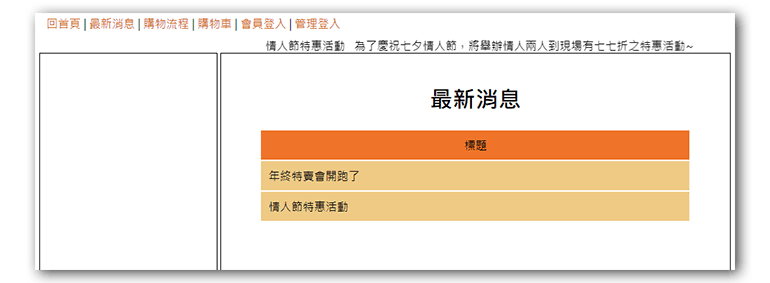
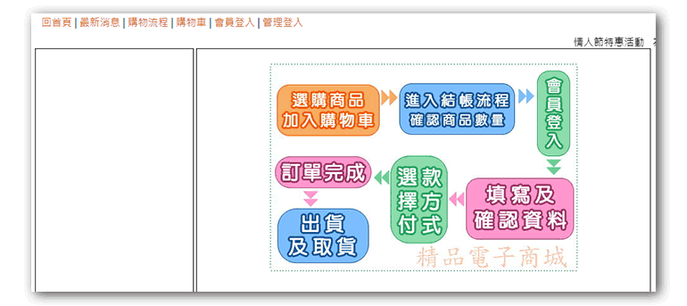

項目三提到的內容大多都是後面的功能有做完就會有的，但反過來說，如果後面的相關功能沒完成的話，這邊會再多扣五分，而題組四中有些功能是和資料庫無關的，因此我們會先在這步驟把這些相較之下可以快速完成的功能先做完。
在
./front/中的news.php中建置最新消息內容，參考項目(六)題目提到的跑馬燈是
0402.txt中的兩個標題，而此題並沒有提到標題資料需要從資料庫中讀取，因此我們只要直接在 index.php 中加入最新消息的兩則跑馬燈消息即可：1
2
3<marquee>
情人節特惠活動 年終特賣會開跑了
</marquee>最新消息的文字描述中，並沒有提到點擊標題後顯示詳細內容，再加上後台也沒有最新消息管理的功能，因此這邊我們只先做到顯示兩則消息的標題即可，後續功能做完再回頭來補，而詳細內容的功能，我建議是使用jQuery的hide()和show()來做切換顯示即可，參考以下寫法：
1
2
3
4
5
6
7
8
9
10
11
12<h1 class="ct">最新消息</h1>
<table class='all'>
<tr class='tt ct'>
<td>標題</td>
</tr>
<tr class="pp">
<td>年終特賣會開跑了</td>
</tr>
<tr class='pp'>
<td>情人節特惠活動</td>
</tr>
</table>

- 在
./front/中的look.php中加入購物流程圖片1
2
3<div class="ct">
<img src="icon/0401.jpg" alt="">
</div>
